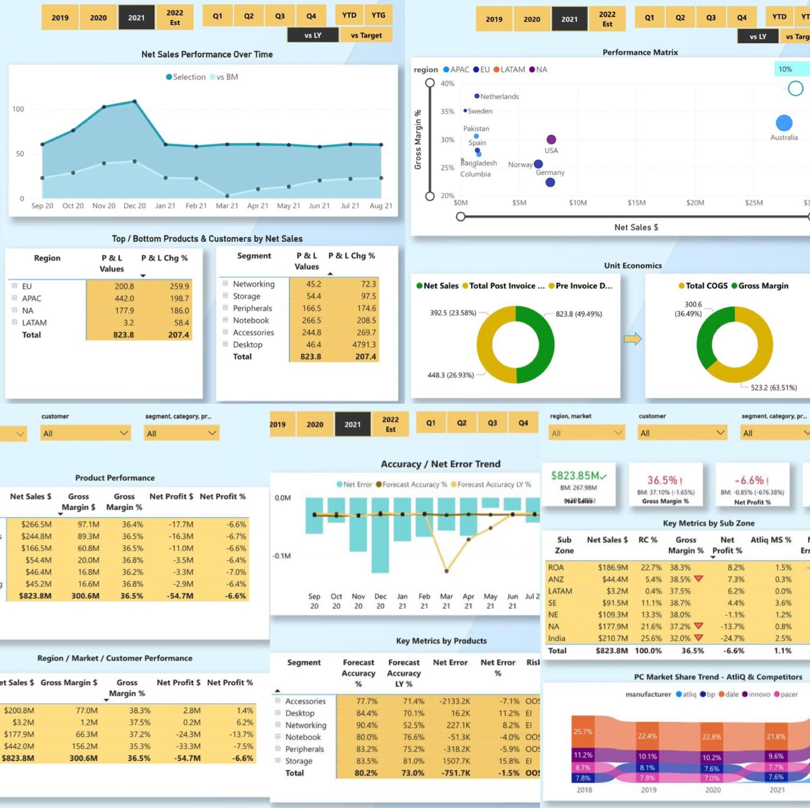

Designed a multi-view dashboard in Power BI for AtliQ Hardware covering finance, sales, marketing, supply chain,
and executive management. Transformed and wrangled over 1.8M records from MySQL and Excel, boosting efficiency by 30%
using DAX Studio and driving collaborative, data-driven decisions across departments.
Designed and delivered an end-to-end Sales and Finance analytics solution in Excel.
Utilised Power Query for ETL, Power Pivot for data modeling, and DAX for advanced calculations.
Key reports include customer performance, market vs. target analysis, Profit & Loss by fiscal year and market, division-level reports,
product trends, and gross margin insights.
These reports enable strategic decision-making, support smarter discounting, and highlight growth opportunities.

The rise of Bitcoin as a significant financial asset has brought forth its potential
impact on traditional stock markets. This project delves into predicting Bitcoin prices,
contributing to a profound understanding of the intricate dynamics shaping contemporary
financial markets. The study employs machine learning techniques, primarily utilizing the
historical Bitcoin-GBP data spanning from January 1st, 2015, to September 1st, 2023. By harnessing
artificial neural networks and ensemble models, the project unveils invaluable insights into the
volatile financial landscape. Four models – Multilayer Perceptron (MLP), Long Short-Term Memory (LSTM)
network, Random Forest Regressor, and Gradient Boosting Machine Regressor – were developed to predict
Bitcoin prices. The top two performers, MLP and Random Forest, from both artificial neural networks
and ensemble models were selected and optimized for future price predictions, yielding promising
results exceeding 99% accuracy. Despite these promising outcomes, limitations include model overfitting,
sensitivity to data variability, and potential overestimations.

Navigating the intricate realm of image segmentation, this project delves into the comparative
efficacy of three prominent architectures: FCN, PSPNet, and U-Net. By implementing these models
and analyzing their performance, I gain profound insights into their strengths and limitations.
Exploring augmentation techniques, I uncovered a plethora of methods for manipulating and presenting
images, enhancing their diversity, and enriching our understanding of segmentation challenges.
Hyperparameter optimization plays a crucial role in shaping model performance. By carefully adjusting
parameters like learning rate, batch size, and optimizer type, we can significantly improve
segmentation accuracy. Evaluation metrics provide valuable insights into model performance, allowing
for comparison of the different architectures and identifying areas for improvement.

This project delves into the comparative performance of Multi-Layer Perceptron (MLP) and Convolutional Neural Network (CNN) models
for handwritten character recognition using the EMNIST dataset. The analysis demonstrates that CNNs consistently outperform MLPs in
terms of accuracy and robustness using different hyperparameter tuning configurations. CNNs exhibited superior accuracy compared to MLPs,
achieving an overall test accuracy of 87.88%, surpassing MLP's 83.65%. CNNs effectively captured spatial information from handwritten images,
enabling them to accurately identify characters. MLPs however, struggled with image data due to their inherent limitations in processing spatial features,
leading to lower accuracy. CNNs, hence, are computationally demanding and require large amounts of data for training, posing challenges for resource-constrained
environments. While MLPs are versatile in handling tabular data, CNNs emerge as the preferred choice for image classification tasks, particularly in scenarios
requiring high accuracy and robustness. The choice between MLPs and CNNs depends on the specific nature of the problem and the available resources.
Navigating the intricate world of reinforcement learning (RL), I delved into the Mountain Car
MDP(Markov Decision Process), utilizing the OpenAI Gym library and employing the deep SARSA algorithm.
This challenging environment presents two distinct modes: discrete and continuous, with our implementation
focusing on the discrete version. Within this simulated realm, a car occupies the base of a sinusoidal valley,
its sole means of propulsion being acceleration. This acceleration can be applied in any direction through a
predefined set of deterministic actions: accelerating left, not accelerating, or accelerating right. Employing
the deep SARSA technique, the car's behavior was shaped through a combination of exploration and exploitation,
gradually learning to navigate the valley's treacherous slopes and ultimately reach the desired goal.
This journey of learning and adaptation exemplifies the power of RL in tackling complex sequential decision-making tasks.
In the realm of data analysis and machine learning, clustering algorithms emerge as indispensable tools, illuminating
intricate patterns, coalescing similar data points, and unlocking profound understanding from complex datasets.
Seeking to unravel the inner workings of these algorithms, I embarked on a mission to meticulously develop K-Means,
K-Means++, and Bisecting Hierarchical K-Means from their foundations. To assess their efficacy, I employed the Silhouette
Coefficient evaluation metric, rigorously comparing their ability to partition and classify data with exceptional precision.
Delving into the intriguing landscape of multi-armed bandits (MABs), this project explores
the delicate balance between exploration and exploitation, a fundamental dilemma in reinforcement
learning (RL). The ε-greedy algorithm, a well-established approach, is meticulously examined,
contrasting its performance against a simple greedy method. The ε-greedy algorithm, guided by a
tunable parameter ε, deftly navigates this trade-off. With a higher ε, it prioritizes exploration,
venturing into uncharted territories to gather new information, while a lower ε shifts the focus
to exploitation, maximizing rewards by sticking to proven strategies. Comparing the ε-greedy
algorithm to the greedy method, where exploitation dictates every decision, the results unequivocally
favor the ε-greedy approach. This consistent superiority stems from the algorithm's ability to balance
exploration and exploitation, gradually accumulating knowledge while simultaneously reaping the benefits
of known good actions. The ε-greedy algorithm's performance is subtly influenced by ε, with a lower ε
fostering more exploration and a higher ε promoting greater exploitation. This sensitivity highlights the
algorithm's adaptability, allowing it to dynamically adjust its behavior based on the specific context.
In the realm of machine learning, supervised learning methodologies for binary classification represent algorithms
that skillfully categorize new observations into one of two distinct classes. This project embarked on an in-depth
evaluation of the performance of three prominent supervised learning approaches when applied to binary classification
problems. The objective is to gain a refined understanding of both the strengths and drawbacks of each classification
method when employed to categorize a dataset containing data from two classes: class 0 and class 1. Three binary
classification techniques are meticulously implemented in this endeavor: K-nearest Neighbors, Decision Tree, and
Logistic Regression.
The perceptron algorithm, a cornerstone of neural network architecture, stands as a fundamental tool
for binary classification tasks. This algorithm, composed of two layers – input and output – interconnected
by weighted connections, strives to delineate a linear decision boundary capable of effectively separating two
distinct classes. Through an iterative adjustment of weights and a bias term, the perceptron, equipped with a
signed linear activation function, endeavors to achieve this objective. This project delves into the intricacies
of the perceptron algorithm, culminating in its implementation from scratch.
Demonstrated an expertise in designing and implementing robust voting algorithms to
address a variety of decision-making scenarios. These algorithms effectively determine
the winning alternative amidst a group of agents with distinct preference orderings.
Each individual agent possesses a unique ranking of alternatives, denoted as ≻, where α ≻ β
signifies the agent's preference for α over β. A preference profile encompasses n preference orderings,
one for each agent, capturing the collective preferences of the group. For instance, in a voting scenario
involving 4 agents and 4 alternatives, a potential preference profile could be as follows:
Agent 1: α≻γ≻β≻δ
Agent 2: α≻β≻δ≻γ
Agent 3: γ≻β≻α≻δ
Agent 4: β≻α≻δ≻γ.
A voting rule functions as a mechanism that translates the preferences of the agents into a single winning alternative.
With a focus on simplicity and efficiency, I designed a comprehensive banking system to manage
customer accounts. The system employs two primary classes, BasicAccount and PremiumAccount,
mirroring the distinction between basic and premium banking services. BasicAccount caters to
the core banking functions of deposit, withdrawal, and account information retrieval, while
PremiumAccount extends these functionalities to encompass the option of overdraft.
This feature empowers account holders to exceed their current account balance within
a specified limit, providing them with greater financial flexibility.

Developed an application for managing caches that utilizes two cache management strategies:
FIFO (First-In, First-Out) and LFU (Least Frequently Used). This project allows for the effective
management of a predetermined cache capacity. The program receives page requests from the user,
checks each page to see if it is already cached, and if not, removes a page based on the selected policy,
displaying the cache's contents after each policy's execution.